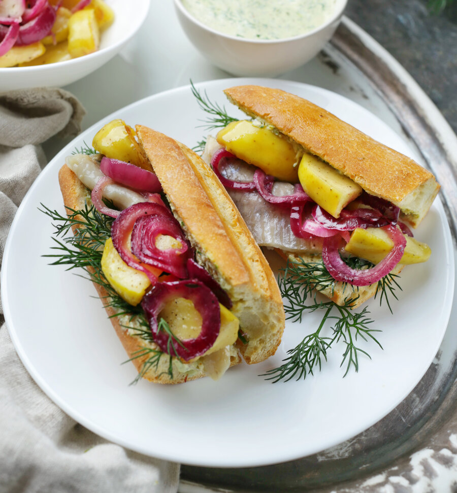

Сэндвич, или бутерброд, при кажущейся простоте может быть как потрясающе вкусной трапезой, так и полным провалом. И здесь, не поверите, тоже необходима теоретическая часть, для того чтобы понимать, какие технологии нужно соблюдать, чтобы у вас получился идеальный сэндвич.
Давно ведутся споры, что является сэндвичем, а что — бутербродом, но в данном случае мы будем говорить, скорее, об открытых бутербродах и закрытых сэндвичах между двумя ломтиками хлеба либо в какой-нибудь лепешке, или завернутых во что-то.
Первый и, вроде бы, очевидный секрет: выбирайте самый лучший хлеб, который вы только можете купить, а если вдруг будете печь его самостоятельно, обратите внимание на конспект по хлебу, там, кстати, тоже есть отличный хлеб для сэндвичей. В хорошем хлебе половина секрета успеха. Хлеб, который вы используете, должен быть достаточно вкусным, чтобы вам хотелось есть его просто так.
Так как хлеб — базовый продукт, очень мало кто когда-либо заглядывает в этикетку и изучает его состав. А ведь даже если хлеб продается без упаковки, вы всегда можете спросить в булочной, какие ингредиенты в него входят. Хороший хлеб — это чаще всего вода, мука, дрожжи, иногда с добавлением масла или какого-нибудь молочного продукта, орехов и так далее. Если в хлебе есть стабилизаторы, сахар, пальмовое масло и тому подобное, такой хлеб лучше не покупать для сэндвичей и вообще ни для чего.
Нет никакого правила, какой хлеб лучше использовать для каких сэндвичей — это дело вкуса, главное, чтобы хлеб был вкусный. Единственное: если у вас хлеб с очень твердой коркой и плотной текстурой, лучше не класть в него нежные по текстуре ингредиенты, потому что они будут просто при нажатии вылезать.
Секрет номер два — сэндвич очень скучен без приправ. Под приправами подразумеваются различные добавки. Опять же, качество здесь первично: купите баночку качественной горчицы, а лучше, если у вас будут разные виды горчицы — с зернами, без зерен, с добавлением белого вина или меда. Какой-нибудь классный релиш или домашние маринованные огурчики, и, конечно, король сэндвичей — майонез, который каждый раз может играть по-другому, благодаря добавкам. Например, в майонез можно добавить хлопья перца чипотле или просто чили, или васаби, или ту же горчицу, не говоря уже о различных соусах на основе майонеза. Кстати, майонез не только делает сэндвич более сочным, но и играет роль защиты от промокания, так как в майонезе есть жир, который не связывается с водой.
Секрет номер три — овощи. Они добавляют в сэндвичи свежесть и сочность, поэтому от их вкуса, качества и кондиции многое зависит. Если вам нужно освежить салатные листья, поместите их на некоторое время, минут на 10–15, в очень холодную воду, а затем извлеките и хорошо просушите, прежде чем добавлять в сэндвич. И не забывайте солить и перчить все овощи, в том числе салатные листья, прежде чем класть их в сэндвич, потому что это добавит вкуса.
Овощи могут использоваться в виде различных салатов, типа коул-слоу, или пикулей (маринованных овощей), или ферментированных — здесь удобство в том, что все эти заготовки вы можете сделать заранее, они долго хранятся в холодильнике, и у вас получается очень богатый «гардероб» для сэндвичей: достаточно купить хороший хлеб, приготовить домашний майонез, выбрать белковую составляющую, и вот — вуаля — за десять минут у вас шикарный сэндвич.
Когда речь идет об овощах, лучше, конечно, использовать то, что сейчас в сезоне. Нет смысла зимой класть «пластмассовые» большие помидоры, лучше выбрать более сладкие черри. Можно сделать помидоры конфи или подвялить их со специями или с травами и чесноком, полив оливковым маслом — их скучноватый «зимний» вкус преобразится.
Белковые продукты в сэндвичах вкуснее, если они горячие или теплые, но даже когда вы делаете холодный сэндвич, не используйте ветчину или колбасу прямо из холодильника, хотя бы согрейте их до комнатной температуры.
Есть ли какое-то правило, как собирать сэндвич? Это все, конечно, зависит от вашего вкуса, но главное — помните, что переборщить в сэндвиче тоже можно, здесь не работает правило «чем больше, тем лучше». Если у вас слишком много ингредиентов, во-первых, сэндвич будет сложно есть, во-вторых, это собьет, смешает вкусы и нарушит их баланс.
Нужно выкладывать ингредиенты так, чтобы они не забивали вкус других ингредиентов и вместе создавали баланс, но при этом вы чувствовали бы вкус каждого из них по отдельности.
Пожалуй, сочные овощи, такие как помидоры, лучше класть вниз сэндвича, а не в середину, чтобы при откусывании помидор не вылез и не забрызгал вас. Если у вас жирные или скользкие ингредиенты, такие как майонез или ветчина, рекомендуем отделять их чем-нибудь друг от друга, например, листом салата или помидором.
10 идей бутербродов:
1. Бутерброды с жареными баклажанами: подпеченные на сухой сковородке кружочки багета, кружочки холодных жареных баклажанов, пропущенный через пресс чеснок, кружочки помидора, соль, листочки петрушки для украшения.
2. Бутерброды в стиле «Капрезе»: поджаренные на оливковом масле ломтики дрожжевого хлеба, сверху внахлест кружочки моцареллы и сезонных вкусных помидоров, сбрызнуть хорошим оливковым маслом, соль, свежемолотый черный перец, листочки зеленого базилика для украшения.
3. Бутерброды с паштетом: тосты из цельнозернового хлеба, вкусный паштет (например, из куриной печени), луковый или брусничный джем отдельными 3–4 порциями по 1/2 ч. л., обжаренные на сухой сковородке кедровые орешки, микрозелень для украшения.
4. Бутерброды с утиной грудкой и инжиром: тосты из бриоши или белого дрожжевого хлеба, сливочное масло, ломтики жареной утиной грудки, дольки слегка обжаренного с сахаром и маслом свежего инжира, сбрызнуть бальзамическим уксусом, по желанию посыпать карамелизованными с сахаром дроблеными грецкими орехами.
5. Бутерброды с ростбифом: ломтики ржаного хлеба слегка смазать тертым хреном или горчицей, выложить объемно ломтики ростбифа, поперчить, дополнить почками или плодами каперсов и, по желанию, тонкими кружочками сладкого красного лука.
6. Бутерброды с копченой рыбой или шпротами: кружочки багета смазать домашним майонезом с чесноком, выложить кружочки сваренного вкрутую яйца, на них кружочки помидора, затем разобранную на хлопья рыбу горячего копчения или целые шпроты, украсить листочками петрушки.
7. Английские сэндвичи с огурцом к чаю: нарезать длинный огурец тонкими полосками с помощью овощечистки, слегка посолить, дать стечь жидкости (минут 10), обсушить бумажными полотенцами. Смазать сливочным маслом ломтики тостового хлеба, выложить ломтик хлеба маслом вверх, на него полоски огурца ровным слоем, ломтик хлеба маслом вниз, прижать. Обрезать края, разрезать на треугольники.
8. Голландская булочка с селедкой: разрезать булочку для хот-дога не до конца, выложить длинное филе сельди пряного посола или слабосоленой селедки, посыпать мелко нарубленным красным или сладким белым луком и так же мелко нарезанными маринованными огурчиками.
9. Горячий гавайский бутерброд: выложить на тосты из пшеничного хлеба по паре ломтиков ветчины или окорока, сверху колечко консервированного ананаса, накрыть квадратиком легко плавящегося сыра, посыпать паприкой и запечь при 200 °С в течение 10 минут, до расплавления сыра (в конце можно поместить под верхний гриль на пару минут, чтобы сыр слегка подрумянился).
10. Горячий тост с яйцом на завтрак: смазать тонким слоем сливочного масла два ломтика тостового хлеба, в одном стаканом или круглой формочкой вырезать отверстие. Положить ломтик с отверстием на целый, в отверстие аккуратно выпустить 3 перепелиных или 1 маленькое (С2) куриное яйцо. Посолить, поперчить, посыпать по краям тертым сыром и запекать при 200 °С, пока белок яйца не схватится (желток должен остаться жидким), а сыр не растает. При подаче посыпать рубленой зеленью.